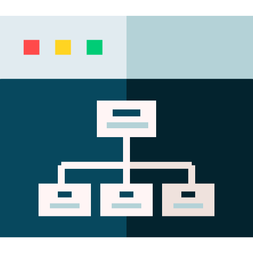
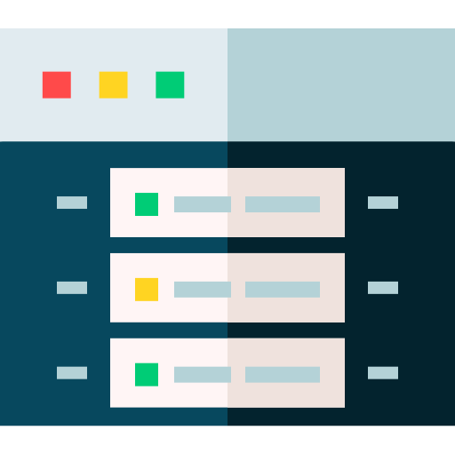

Bonjour.
Cinq ans après la fin du cégep, je coordonne le département d'informatique du Collège O'Sullivan de Montréal et j'y enseigne la cybersécurité. L'étudiant curieux est devenu celui qui pose les questions au tableau.
Ce que je fais.

Coordination
Comme coordonnateur du département d'informatique, je vois la formation dans son ensemble plutôt qu'un cours à la fois. Répartition des cours, suivi des étudiants, arrimage entre les enseignants et lien avec la direction.

Enseignement
Je donne les cours de programmation et de sécurité en Techniques de l'informatique, et j'accompagne les étudiants dans leur projet de session, de la conception du laboratoire jusqu'à la présentation finale. Je forme en parallèle des adultes en emploi au Cégep de Saint-Laurent, en ligne, sur la sensibilisation à la cybersécurité et les outils collaboratifs.

Cybersécurité
Je termine ma dernière année de baccalauréat en cybersécurité à Polytechnique Montréal, un cheminement bâti sur trois certificats, analyse opérationnelle, cyberenquête, puis architecture et gestion. La suite que je vise est une maîtrise recherche en informatique, du côté de la cryptographie et de l'intelligence artificielle.

Systèmes et réseaux
Avant l'enseignement, j'ai administré des serveurs Linux et Windows, dont trois ans dans l'hébergement web. C'est là que j'ai appris ce qui casse pour vrai, et c'est encore ce que je ramène en classe quand une notion reste trop théorique.
Mes outils.
Linux
Windows Server
Active Directory
Python
Virtualisation
Microsoft 365
Mes cours.
Python
Sécurité 1
Sécurité 2
Active Directory
Surveillance des réseaux
Projet de session
Mon parcours.
Coordonnateur de département
Collège O'Sullivan de Montréal, informatique
Répartition des cours, suivi des étudiants et arrimage de l'équipe enseignante.
Enseignant en cybersécurité
Collège O'Sullivan de Montréal
Cours de programmation et de sécurité, encadrement des projets de session.
Formateur en cybersécurité
Cégep de Saint-Laurent, depuis janvier 2026
Formation en ligne pour adultes en emploi. Sensibilisation aux menaces courantes, outils collaboratifs et usage responsable de l'intelligence artificielle.
Baccalauréat en cybersécurité
Polytechnique Montréal, dernière année
Cheminement par certificats. Analyse opérationnelle et cybersécurité, cyberenquête, architecture et gestion de la cybersécurité.
Administration de systèmes
Avant l'enseignement
Serveurs Linux et Windows, dont trois ans dans l'hébergement web.
On se parle
Collaboration, atelier ou conférence.
Toujours partant pour un nouveau projet.
ÉCRIS-MOI